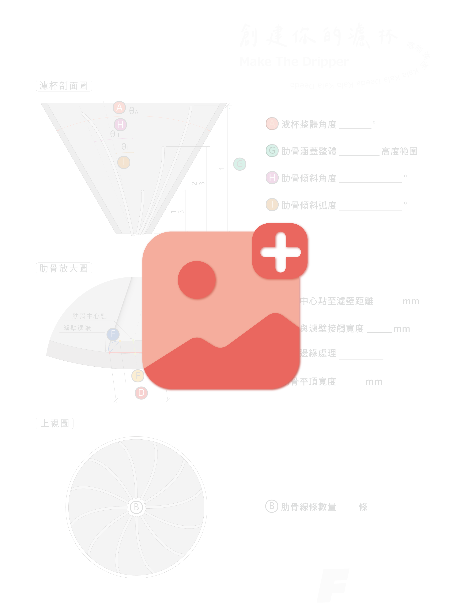

查看濾杯結構與3D模型

 使用滑鼠改變模型視角
使用滑鼠改變模型視角* 中鍵：縮放
* 左鍵：旋轉
#當滑鼠停於模型上時，模型會停止轉動。
建議使用： Chrome、Edge 瀏覽器
最佳解析度： 1920 x 1080 px
Copyright©
查看濾杯結構與3D模型
使用滑鼠改變模型視角建議使用： Chrome、Edge 瀏覽器
最佳解析度： 1920 x 1080 px
Copyright©